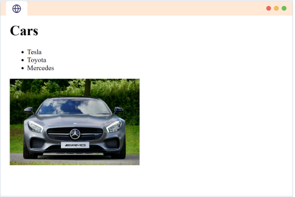

HTML nos permite crear la estructura de una página web.
Por ejemplo, echemos un vistazo a esta página web:
Podemos usar HTML para crear este tipo de estructura web.
Sin embargo, no podemos aplicar estilos a la página web, como añadir color o cambiar las fuentes, usando solo HTML.
Normalmente, una página web moderna se crea utilizando tres "lenguajes":
Con HTML podemos crear esta página web:
Con CSS, podemos estilizar la apariencia de nuestra estructura HTML.
CSS se puede usar para cambiar:
Con JavaScript, podemos agregar funcionalidad interactiva a la página web.
Por ejemplo: cuando se hace clic en un botón, podemos mostrar un formulario emergente.
Nos centraremos únicamente en HTML (es decir, en la creación de páginas web sin estilo ni interactividad).
📌 Aprenderemos sobre CSS y JavaScript en los próximos cursos.